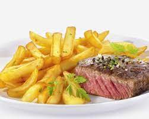

steak frites

Description
Un delicieux steak de boeuf avec ses frites maisons comme au restaurant !
- Steak
- Pommes de terre
- Sel et poivre
- Faire cuire le steak 10 minutes sur chaque face a feu vif
- Rajouter les herbes de provences
- Couper les patates et les faire cuire dans l'huile
- Assembler le steak et les frites
- Deguster :)